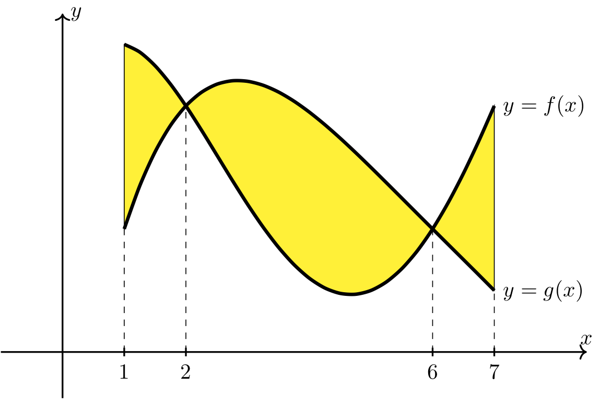
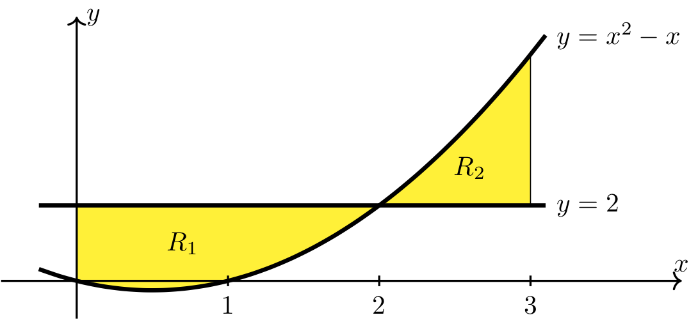
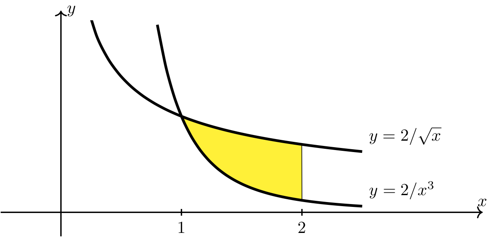
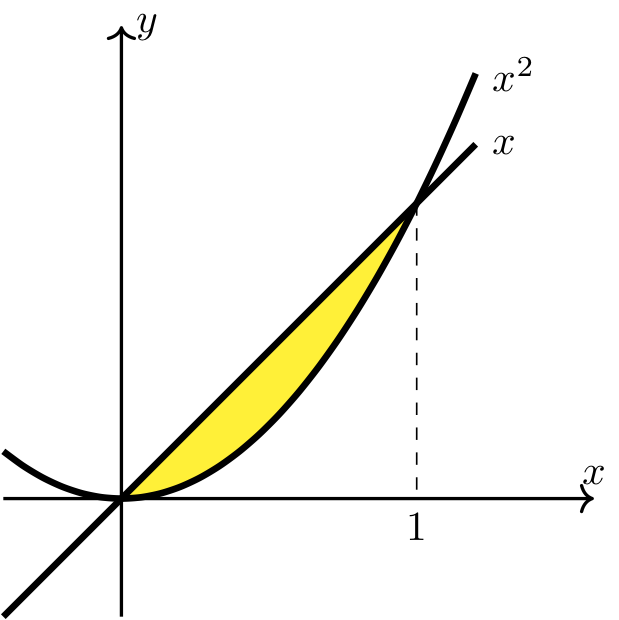
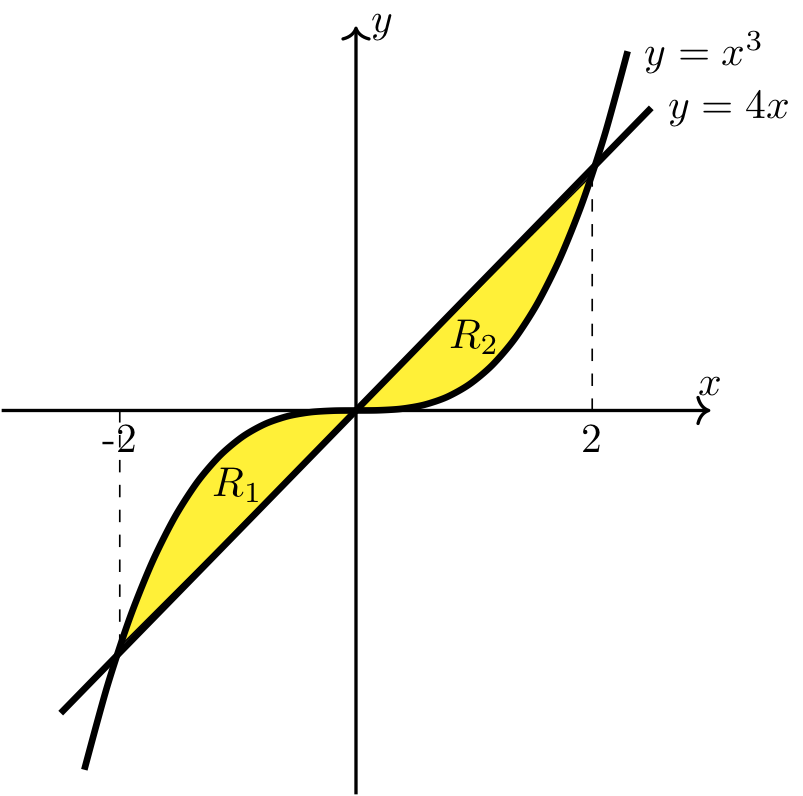

Area Between Two Curves
Contents
Area Between Two Curves#
Computing the Area of a Region Bounded by Two Curves#
{kind=link}
Fig. 12 Area between two curves#
Long Text Description
There is a horizontal x axis with the points a and b labeled, and a vertical y axis with no points labeled. The graphs of two functions are plotted. One, labeled f(x), is above the other, labeled g(x). The curve representing f(x) goes up and down with its concavity downward and then upward moving from left to right. The curve representing g(x) goes down and then up, with its concavity always up. The region between the curves, starting at x value a and ending at x value b, is shaded yellow and labeled R.
Computing the Area between Two Curves
Suppose \(f\) and \(g\) are continuous functions with \(f(x) \geq g(x)\) on \([a,b]\).
Then the area of the region, \(R\), bounded above by \(y=f(x)\) and below by \(y=g(x)\) on \([a,b]\) is given by
When Finding the Area Between Two Curves#
It’s extremely important to draw the region in question to make sure the above formula is applied correctly. While it’s not necessary to draw each curve using all of the techniques built up in the Curve Sketching packet, the curves should be drawn with enough detail to clearly identify the top and bottom functions and the corresponding boundaries.
The following guidelines should be applied to make sure the area of the region is computed correctly.
Find all points of intersection of \(f(x)\) and \(g(x)\) on \([a,b]\).
Use the points of intersection and the values of \(f(x)\) and \(g(x)\) at the endpoints to help sketch the region.
Break up the given interval at the points of intersection.
Determine which function is larger on each subinterval.
Calculate the area of each subregion using the formula above.
Combine the areas of the different subregions.
Example 1#
Area between two curves on given interval
Find a sum of integrals that represents the area of the region bounded by \(y=f(x)\) and \(y=g(x)\) on \([1,7]\) as shown below.
{kind=link}
Long Text Description
There is a horizontal x-axis with points labeled one, two, six, and seven, and a y axis with no points labeled. Parts of the graphs of two functions are plotted. One, labeled f(x), begins at x=1 above the other, labeled g(x), the two meet at x = 2, g(x) is above f(x) until the two meet again at x=6, after which f(x) is once again above g(x). The region between both curves, starting at x=1 and ending at x=7 is shaded yellow.
Step 1: Find the points of intersection.
Notice that the functions intersect each other at \(x=2\) and \(x=6\). Therefore, we need to break up the original interval, \([1,7]\), into the following subintervals
Step 2: Determine which function is larger on each subinterval and calculate the area of each subregion.
\([1,2]\): On this interval, \(f(x) \geq g(x)\). Therefore, the area of the region bounded by \(f(x)\) and \(g(x)\) on \([1,2]\) is
\[\int_1^2 f(x) - g(x) ~dx.\]\([2,6]\): On this interval, \(g(x) \geq f(x)\). Therefore, the area of the region bounded by \(f(x)\) and \(g(x)\) on \([2,6]\) is
\[\int_2^6 g(x) - f(x) ~dx.\]\([6,7]\): On this interval, \(f(x) \geq g(x)\). Therefore, the area of the region bounded by \(f(x)\) and \(g(x)\) on \([6,7]\) is
\[\int_6^7 f(x) - g(x) ~dx.\]
Step 3: Combine the areas of the different subregions.
The area of the region described above is given by
Example 2#
Area between \(y = x^2-x\) and \(y = 2\) on given interval
Find the area of the region bounded by \(y = x^2-x\) and \(y = 2\) on the interval \([0, 3]\).
Step 1: Find the points of intersection and use them to help sketch the region.
The two curves intersect each other when \(x^2-x = 2\), or equivalently when
equals zero, which happens when \(x=2\) and \(x=-1\). Notice that \(x=-1\) is not relevant since it is not on the interval \([0,3]\).
{kind=link}
Long Text Description
There is a horizontal x axis with points labeled one, two, and three, and a vertical y axis with no points labeled. The graphs of two functions are plotted. The first is the constant function y = 2, which begins above the second which is y=x^2-x. The second, quadratic, function begins below the first function, dips below the x axis, and meets the second function at x = 2, and is above it to the right of x=2. The region where x^2-x < 2, beginning at x=0 and ending at x=2, is shaded yellow and labeled R_1, and the region where x^2-x > 2, beginning at x=2 and ending at x=3, is shaded yellow and labeled R_2.
Step 2: Calculate the area of each subregion.
Area of region \(R_1\). Note that \(2\geq x^2 - x\) on \([0,2]\).
Area of region \(R_2\). Note that \(x^2 - x\geq 2\) on \([2,3]\).
Step 3: Combine the areas of the different subregions.
The area of the region bounded by \(y = x^2-x\) and \(y = 2\) on \([0, 3]\) is \(\frac{10}{3} + \frac{11}{6} = 31/6.\)
Observation
Observe that the area of the region is not equal to \(\int_0^3 2 - (x^2-x) ~dx = 3/2\). This underscores the importance of drawing the region before setting up the integral.
Example 3#
Area enclosed by three curves
Find the area of the bounded region enclosed by \(y=\dfrac{2}{\sqrt{x}}\), \(y= \dfrac{2}{x^3}\), and \(x=2\).
Step 1: Find the points of intersection and use them to help sketch the region.
Therefore, the curves intersect only when \(x=1\). And since only one vertical line, \(x=2\), was given that bounds the region, we must use the point of intersection at \(x=1\) as the other vertical line that bounds the region.
{kind=link}
Long Text Description
There is a horizontal x-axis with the points 1 and 2 labeled, and a vertical y-axis with no points labeled. The graphs of two decreasing, concave up functions are plotted. The first function, y=2/x^3, begins above the second, 2/sqrt(2). The two meet at x=1 and to the right of x=1 y=2/sqrt(x) is above y=2/x^3. The region between the two functions from x=1 and x=2 is shaded yellow and is not labeled.
Step 2: Calculate the area of the region.
Note that \(\dfrac{2}{\sqrt{x}} \geq \dfrac{2}{x^3}\) on \([1,2]\) and therefore the area of the region is given by \(\int_1^2 \frac{2}{\sqrt{x}} - \frac{2}{x^3} ~dx\).
Therefore, the area of the region bounded by \(y=12\sqrt{x}\), \(y=2/x^3\), and \(x=2\) is \(4 \sqrt{2} - 19/4\).
Example 4#
Area enclosed by two curves with two points of intersection
Find the area of the bounded region enclosed by \(y=x\) and \(y=x^2\).
Step 1: Find the points of intersection and use them to help sketch the region.
Therefore, the curves intersect when \(x=0\) and when \(x=1\).
Notice that the points of intersection are used as the left and right boundaries of our region.
{kind=link}
Long Text Description
There is a horizontal x axis with the point 1 labeled and a vertical y axis with no points labeled. The graphs of two functions are plotted. The first function, the increasing linear function y=x is above the other function, the increasing quadratic function y=x^2, from the y axis to x=1. The region between the two functions from the y axis to x=1 in shaded yellow and is not labeled.
Step 2: Calculate the area of the region.
Note that \(x \geq x^2\) on \([0,1]\) and therefore the area of the region is given by \(\int_0^1 x-x^2 ~dx\).
Therefore, the area of the region bounded by \(y=x\) and \(y=x^2\) is \(1/6\).
Example 5#
Area enclosed by two curves with three points of intersection
Find the area of the bounded region enclosed by \(y = x^3\) and \(y = 4x\).
Step 1: Find the points of intersection and use them to help sketch the region.
Therefore, the curves intersect when \(x=-2\), when \(x=0\), and when \(x=2\).
{kind=link}
Long Text Description
There is a horizontal x axis with the points -2 and 2 labeled and a vertical y axis with no points labeled. The graphs of two functions are plotted. The increasing linear function 4x is below the increasing cubic function y=x^3 from x=-2 to the y-axis, and it is above the cubic function from the y-axis to x=2. The area between the curves from x=-2 to the y axis is labeled R_1 and is shaded yellow. The area between the curves from the y axis to x=2 is labeled R_2 and is shaded yellow.
Step 2: Calculate the area of each subregion.
Area of region \(R_1\). Note that \(x^3\geq 4x\) on \([-2,0]\).
Area of region \(R_2\). Note that \(4x\geq x^3\) on \([0,2]\).
Step 3: Combine the areas of the different subregions.
The area of the region bounded by the curves \(y = x^3\) and \(y = 4x\) on the interval \([-1, 3]\) is